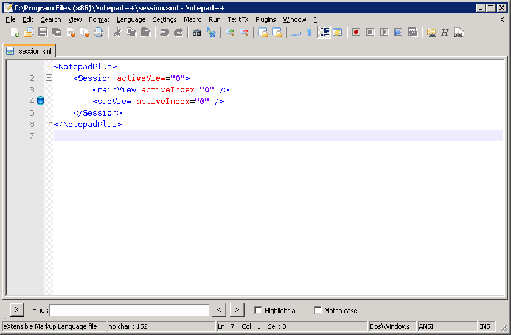

Texto original
Sugiere una traducción mejor
| Previous: Cuadro de diálogo Buscar desactivado | Buscar | Siguiente: Cuadro de diálogo: Ir a ... |

Para abrir el cuadro de diálogo Búsqueda incremental, seleccione
. Esta es una forma rápida de encontrar la primera aparición de texto y luego encontrar todos los resultados consecuentes.
Finalmente, el botón cierra el cuadro de diálogo de búsqueda incremental .